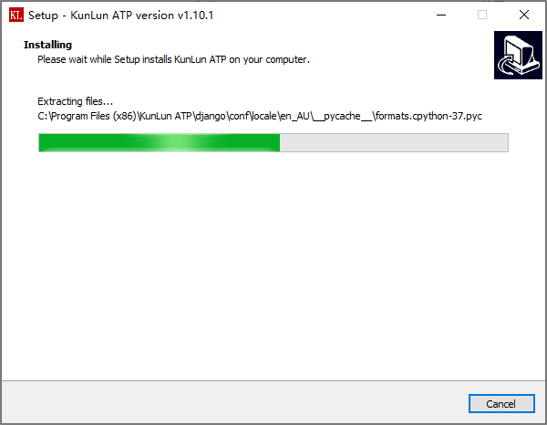
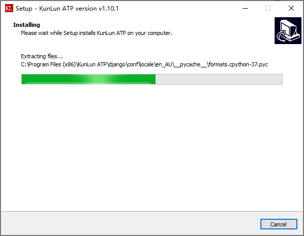

安装指南¶
操作系统要求¶
本平台要求安装在Windows 10操作系统。暂不支持Linux操作系统。
安装过程说明¶
下载安装包，右键以管理员权限安装，安装过程如以下所示：

安装目录必须为: C:\Program Files (x86)\KunLun ATP ，不要修改默认设置。

选择创建桌面快捷方式。

 

点击Finish，安装完成。

软件启动/关闭¶
安装完成后，本平台将在桌面自动创建快捷方式，以便快速启动/关闭本平台服务。
双击Start Kunlun快捷方式，启动平台的过程中，如果出现请求权限的弹窗，需选择”允许”或是”同意”。 本平台服务运行过程中，不能关闭此窗口，若不小心关闭，需重新启动。
双击Stop Kunlun快捷方式，关闭本平台所有服务，